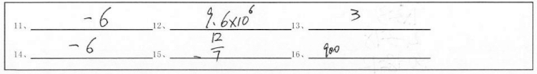

概况
-
班级平均分
平均得分率
-
比年级平均分高22分
比本班其他科目平均分高8.31%
-
不及格
22人12.25% -
及格
22人12.25% -
良好
22人12.25% -
优秀
22人12.25%
特点分析
闪光点
| 学生 | 张三 | 李四 | 王五 | 赵柳 | 肖七 |
|---|---|---|---|---|---|
| 知识 | 古文 38.55% | 字 38.55% | 古文 38.55% | 字 38.55% | 字 38.55% |
| 题目 | 1 | 3 | 5 | 8 | 11 |
薄弱点
| 学生 | 张三 | 李四 | 王五 | 赵柳 | 肖七 |
|---|---|---|---|---|---|
| 知识 | 古文 38.55% | 字 38.55% | 古文 38.55% | 字 38.55% | 字 38.55% |
| 题目 | 1 | 3 | 5 | 8 | 11 |
易错知识
| 知识点 | 满分值 | 知识平均得分率 | 本班失分人数 | 对应题目 | 掌握程度 |
|---|---|---|---|---|---|
| 古文 | 1 | 58.67% | 12张三、李四、王五、学生1、学生2、学生3、学生4 | 第5题、第3题、第1题.第1题、第2题、第3题、第4题、第5题、第6题、第7题、第8题 | 易错 |
| 诗词 | 40 | 58.67% | 12张三、李四、王五、学生1、学生2、学生3、学生4 | 第5题、第3题、第1题.第1题、第2题、第3题、第4题、第5题、第6题、第7题、第8题 | 易错 |
| 语音 | 5 | 58.67% | 12张三、李四、王五、学生1、学生2、学生3、学生4 | 第5题、第3题、第1题.第1题、第2题、第3题、第4题、第5题、第6题、第7题、第8题 | 易错 |
| 字形 | 10 | 58.67% | 12张三、李四、王五、学生1、学生2、学生3、学生4 | 第5题、第3题、第1题.第1题、第2题、第3题、第4题、第5题、第6题、第7题、第8题 | 易错 |
| 写作 | 20 | 58.67% | 12张三、李四、王五、学生1、学生2、学生3、学生4 | 第5题、第3题、第1题.第1题、第2题、第3题、第4题、第5题、第6题、第7题、第8题 | 易错 |
概况
| 题号 | 满分值 | 平均得分率 | 本班失分人数 | 知识点 | 掌握程度 |
|---|---|---|---|---|---|
| 第1题 | 40 | 56.9% | 8张三、李四、王五、学生1、学生2、学生3、学生4 | 语音 | 易错 |
| 第1题 | 40 | 56.9% | 8张三、李四、王五、学生1、学生2、学生3、学生4 张三、李四、王五、学生1、学生2、学生3、学生4 | 语音 | 易错 |
| 第1题 | 40 | 56.9% | 8张三、李四、王五、学生1、学生2、学生3、学生4 张三、李四、王五、学生1、学生2、学生3、学生4 | 语音 | 易错 |
| 第1题 | 40 | 56.9% | 8张三、李四、王五、学生1、学生2、学生3、学生4 张三、李四、王五、学生1、学生2、学生3、学生4 | 语音 | 易错 |
| 第1题 | 40 | 56.9% | 8张三、李四、王五、学生1、学生2、学生3、学生4 张三、李四、王五、学生1、学生2、学生3、学生4 | 语音 | 易错 |
学生成绩
一本达标分 700 二本达标分 550
| 题号 | 学号 | 学生 | 风格 | 成绩 | 班级排名 | 出错题目 | 上线 | 达标 | 查看 |
|---|---|---|---|---|---|---|---|---|---|
| 1 | 2016121680 | 学生1 | 粗心大意 | 82 | 1 | 8第1题、第2题、第3题、第4题、第5题、第6题、第7题、第8题 | 二本 | 15 | 报告|试卷 |
| 1 | 201612168 | 学生1 | 粗心大意 | 82 | 1 | 8第1题、第2题、第3题、第4题、第5题、第6题、第7题、第8题 | 二本 | 15 | 报告|试卷 |
| 1 | 2016121680 | 学生1 | 粗心大意 | 82 | 1 | 8第1题、第2题、第3题、第4题、第5题、第6题、第7题、第8题 | 二本 | 15 | 报告|试卷 |
| 1 | 2016121680 | 学生1 | 粗心大意 | 82 | 1 | 8第1题、第2题、第3题、第4题、第5题、第6题、第7题、第8题 | 二本 | 15 | 报告|试卷 |
| 1 | 2016121680 | 学生1 | 粗心大意 | 82 | 1 | 8第1题、第2题、第3题、第4题、第5题、第6题、第7题、第8题 | 二本 | 15 | 报告|试卷 |
第1题得分：1.0分（满分1.0分） 知识点：字形
- 选出字形有误的一项：
-
- A酝酿 搓捻 并蒂 小心翼翼 一字不漏 不求甚解
- B匿笑 绰号 肥硕 水波粼粼 翻来覆去 浑为一谈
- C停滞 寒站 肥硕 画图锦簇 持之以恒 疲倦不堪
- D并蒂 徘徊 黑痣 鸦雀无声 萍水相逢 疲倦不堪
我的答案：C
正确答案：B
解析
- 【成语】：混为一谈
- 【拼音】：hun wei yi tan
- 【解释】：把不同的事物混在一起，当作同样的事物谈论
- 【考点】：本题考察考生对易混淆字的知识
班级平均分：3分年级平均分：2.88分（答对55人/答错0人/班级得分率100%）
| 选项 | 人数 | 比例 |
|---|---|---|
| 选项A | 10第1题、第2题、第3题、第4题、第5题、第6题、第7题、第8题 | |
| 选项B | 10第1题、第2题、第3题、第4题、第5题、第6题、第7题、第8题 | |
| 选项C | 10第1题、第2题、第3题、第4题、第5题、第6题、第7题、第8题 | |
| 选项D | 10第1题、第2题、第3题、第4题、第5题、第6题、第7题、第8题 |
第1题得分：1.0分（满分1.0分） 知识点：字形
- 中国的国土面积为9 596 960平方千米，把我国的国土面积用四舍五入精确到万位，并用科学计数法表示，应为________________________平方千米 。
我的答案：
正确答案：B
解析
- 【成语】：混为一谈
- 【拼音】：hun wei yi tan
- 【解释】：把不同的事物混在一起，当作同样的事物谈论
- 【考点】：本题考察考生对易混淆字的知识
优秀作答：
班级平均分：3分年级平均分：2.88分（答对55人/答错0人/班级得分率100%）
| 选项 | 人数 | 比例 |
|---|---|---|
| 选项A | 10第1题、第2题、第3题、第4题、第5题、第6题、第7题、第8题 | |
| 选项B | 10第1题、第2题、第3题、第4题、第5题、第6题、第7题、第8题 | |
| 选项C | 10第1题、第2题、第3题、第4题、第5题、第6题、第7题、第8题 | |
| 选项D | 10第1题、第2题、第3题、第4题、第5题、第6题、第7题、第8题 |